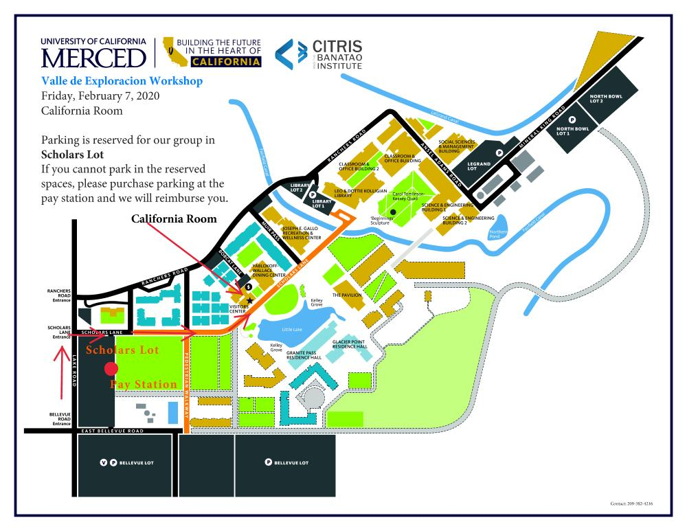

Find your path to a tech career.
If you find solving puzzles, observing the natural world, building tools, or writing code rewarding, we invite you to apply to the 2020 Women In Tech Initiative.
¡Valle de Exploracion! Find your path to a tech career.
University of California, Merced
California Room
Merced, California
February 7 - February 9, 2020
{kind=link}
This program is for undergraduate students from Central Valley community
colleges and universities interested in science, technology, engineering, and
mathematics (STEM).
Hosted by CITRIS @ UC Merced, Merced College, and Google ExploreCSR, the Valle
de Exploracion 3-day workshop prepares women and historically underrepresented
groups in STEM for rewarding careers in technology. We are recruiting for a
cohort of 32 students
who will connect with each other and grow with graduate students, faculty,
staff
and leaders.
The benefits of this training and an education in STEM include increased:
Students will gain an understanding of computing research, prepare their portfolio with the guidance of faculty, participate in computing discipline workshops, and interact with speakers, faculty, and peers about their journey to becoming researchers and tech innovators.
Application information
Application deadline is November 30, 2019
About The Program
If you are traveling from outside of Merced, your hotel room is covered by the program. All meals are covered. Every participant will receive training and materials.
Newsroom
Read about Valle de Exploracion: Find your Path to a Tech Career in the UC Merced Newsroom.
Agenda
| Day 1 - Friday | |
| 10:30 AM | Arrival and Registration Location: California Room |
| 11:00 AM | Welcome Introduction Women In Tech - Ann Kovalchick |
| 12:00 PM | CITRIS and EECS Frontiers in Technology (FIT) Speaker Julie Baker, Co-Founder of Ursa Space Systems Lunch provided |
| 1:30 PM | Ice Breaker |
| 2:00 PM | Goals of the Workshop Growth Mindset Introduction and Gallery Walk Fireside chat: How to Grow as a Scientist and How I Got to Where I Am |
| 4:00 PM | Career Chat Visualizing success |
| 5:00 PM | Q&A with graduate students |
| 7:00 PM | Check into Hotel and Networking Dinner |
| Day 2 - Saturday | |
| 8:00 AM | Breakfast |
| 9:00 AM | Welcome, Reflect, and Review Where Are the Women of Tech discussion |
| 9:30 AM | Panel I: Visualizing success in tech and research
Career Path Talks |
| 11:15 AM | Research Portfolio Kathy Kanemoto |
| 12:15 PM | Networking Lunch Erin Hestir |
| 1:15 PM | NIM coding activity |
| 2:15 PM | Panel II: Visualizing Success in Tech and Industry |
| 3:30 PM | How Do I Find a Good Place to Work |
| 4:00 PM | Career Readiness Skills for STEM Careers |
| 5:00 PM | Elevator Pitch |
| 6:00 PM | Networking Reception and Dinner Location: Merced Golf and Country Club |
| Day 3 - Sunday | |
| 8:00 AM | Breakfast Check out of Hotel |
| 9:00 AM | Reflection: Mentoring Networking |
| 9:30 AM | Leadership and Emotional Intelligence Erin Hestir |
| 10:30 AM | Team Building with Drones Kathy Kanemoto |
| 12:00 PM | Peer Networking Lunch |
| 12:45 PM | Building a website, Kathy Kanemoto Research Portfolio Review, All Mentors |
| 2:15 PM | Continuing Resources with CITRIS Leigh Bernacchi |
| 2:45 PM | Final Raffle, Survey |
| 3:00 PM | Closing - Have a safe travel! |
Maps

Frontiers in Technology Speaker
Important Dates
Notification of applicants Mid-December, 2019
Event Workshop Friday, February 7, 12pm – Sunday, February 9, 3pm
Questions? Leigh Bernacchi, citris@ucmerced.edu
About The Hosts
Google's mission is to organize the world’s information and make it universally accessible and useful.
CITRIS is committed to transformational experiences for students and training the next generation of leaders in computer science research. We specialize in ag-food-tech, sustainable infrastructures, people and robots, and women in technology.
Merced College will provide transformative and empowering educational experiences to meet student and community needs.